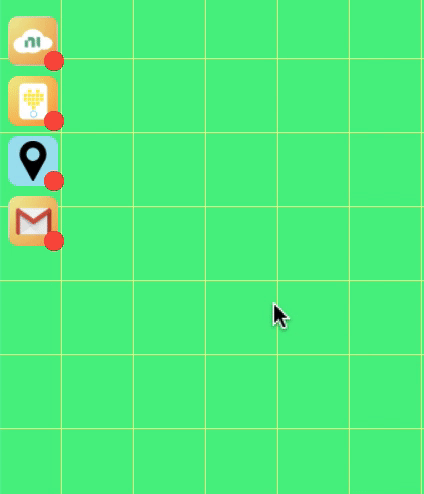

Example

Developing with ServiceDock
The following code creates the ServiceDock interface you see on the top left corner of the example above. This is all you need to use ServiceDock! Be sure to include this HTML with your preferred Services to get started.
<html>
<head>
<script src="https://cdn.jsdelivr.net/gh/tuftsceeo/SPIKE-Web-Interface/cdn/ServiceDock.js"
type="text/javascript"></script>
</head>
<body>
<!-- this style must be kept for normal rendering-->
<div id = "servicedock" style = "float:left;">
<!-- include the Services to use -->
<service-systemlink id = "service_systemlink"></service-systemlink>
<service-spike id = "service_spike"></service-spike>
</div>
</body>
<script>
// Use ServiceDock here!
</script>
</html>
Using Services
To use the Services in your web page, you will need to get its object from its corresponding ServiceDock HTML element. For example, <service-spike id = "service_spike"></service-spike> is the ServiceDock HTML element for the SPIKE Prime Service. To obtain the SPIKE Prime Service object, mySPIKE, you will need to do:
<script>
var SPIKEService = document.getElementbyId("service_spike");
var mySPIKE = SPIKEService.getService(); // your Service object
mySPIKE.executeAfterInit( function () {
// do something with SPIKE Service
})
</script>
Getting the Service object for other types of Services is the same! If you want to get the System Link cloud Service object, all you have to do is:
<script>
var SystemLinkService = document.getElementbyId("service_systemlink");
var mySL = SystemLinkService.getService(); // your Service object
mySL.executeAfterInit( function() {
// do something with SystemLink Cloud Service
})
</script>
Service are not initialized automatically when the web page loads, so it is important to ensure that your code for your Services only run after they have been activated. Use executeAfterInit(callback). The argument is a callback function, a fundamental way in Javascript for ensuring flow of execution. A callback function means that it will not execute until its parent function, executeAfterInit, has finished. For example:
<script>
var SPIKEService = document.getElementbyId("service_spike");
var mySPIKE = SPIKEService.getService(); // your Service object
mySPIKE.executeAfterInit( function () {
// do something with SPIKE Service
})
</script>
Activating Services
By default, a Service object is only initialized when the user clicks the ServiceDock button. However, there are exceptions with some Services if you as the developer do not need the users' input. For example, if you wish to automatically activate the SystemLink Cloud Service with your own API key (and not the visitors'), you can do one of two things:
(1) Provide the API credentials with Javascript.
<script>
var SystemLinkService = document.getElementbyId("service_systemlink");
SystemLinkService.setAttribute("apikey", "your API key"); // provide predetermined API credentials
SystemLinkService.init(); // automatically initialize Service
var mySL = SystemLinkService.getService(); // your Service object
// do something with SystemLink Cloud Service
</script>
(2) Provide the API credentials in HTML
<html>
<head>
<script src = "./modules/ServiceDock.js"></script>
</head>
<body>
<!-- this style must be kept for normal rendering-->
<div id="servicedock" style="float:left;">
<!-- put predetermined API key in HTML attribute -->
<service-systemlink id="service_systemlink" apikey = "your API key"><service-systemlink>
</div>
</body>
<script>
var SystemLinkService = document.getElementbyId("service_systemlink");
SystemLinkService.init(); // automatically initialize Service
var mySL = SystemLinkService.getService(); // your Service object
// do something with SystemLink Cloud Service
</script>
<html>
Security
ServiceDock is a frontend framework, thus all of ServiceDock and your source code can be viewed when published. Therefore, it is not recommended that you provide your own API credentials in your web pages.